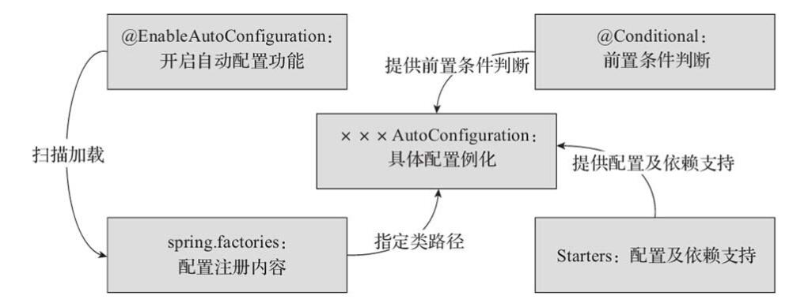

Spring Boot Starter Spring Boot通过提供众多起步依赖（Starter）降低项目依赖的复杂度。起步依赖本质上是一个Maven项目对象模型（Project Object Model, POM），定义了对其他库的传递依赖，这些东西加在一起即支持某项功能。很多起步依赖的命名都暗示了它们提供的某种或某类功能。例如，添加spring-boot-starter-web依赖，就可以用于构建REST API服务，其包含了SpringMVC和Tomcat内嵌容器。
Spring Boot自动装配的过程 使用Spring Boot时，我们只需引入对应的Starters，Spring Boot启动时便会自动加载相关依赖，配置相应的初始化参数，以最快捷、简单的形式对第三方软件进行集成，这便是Spring Boot的自动配置功能。流程图如下：

整个自动装配的过程是：Spring Boot通过@EnableAutoConfiguration注解开启自动配置，用LoadSpringFactories()方法加载/META-INF/spring.factories文件中注册的各种AutoConfiguration类，当某个AutoConfiguration类满足其注解**@Conditional**指定的生效条件（Starters提供的依赖、配置或Spring容器中是否存在某个Bean等）时，实例化该AutoConfiguration类中定义的Bean（组件等），并注入Spring容器，就可以完成依赖框架的自动配置。
spring.factories是一个神奇的文件，SpringBoot会自动的去扫描加载每个jar保重WEB-INF目录下的这个文件，并且读取相关的配置，然后利用反射去加载对应配置类，进行相应的环境配置和参数设置。
自定义SpringBoot Starter
引入项目的配置依赖
1 2 3 4 5 <dependency> <groupId>org.springframework.boot</groupId> <artifactId>spring-boot-autoconfigure</artifactId> <version>2.5 .3 .RELEASE</version> </dependency>
创建xxxService类，完成相关的操作逻辑
1 2 3 4 5 @Data public class DemoService { private String str1; private String str2; ｝
定义xxxProperties类，属性配置类，完成属性配置相关的操作，比如设置属性前缀，用于在application.properties中配置
1 2 3 4 5 6 7 8 9 10 @SuppressWarnings("ConfigurationProperties") @ConfigurationProperties(prefix = "str") public class DemoProperties { public static final String DEFAULT_STR1 = "I know, you need me" ; public static final String DEFAULT_STR2 = "but I also need you" ; private String str1 = DEFAULT_STR1; private String str2 = DEFAULT_STR2; }
定义xxxAutoConfiguration类，自动配置类，用于完成Bean创建等工作
1 2 3 4 5 6 7 8 9 10 11 12 13 14 15 16 17 18 19 20 21 22 @Configuration @ConditionalOnClass({DemoService.class}) @EnableConfigurationProperties(DemoProperties.class) public class DemoAutoConfiguration { @Autowired private DemoProperties demoProperties; @Bean @ConditionalOnMissingBean(DemoService.class) public DemoService helloworldService () { DemoService demoService= new DemoService (); demoService.setStr1(demoProperties.getStr1()); demoService.setStr2(demoProperties.getStr2()); return demoService; } }
在resources下创建目录META-INF，在 META-INF 目录下创建 spring.factories，在SpringBoot启动时会根据此文件来加载项目的自动化配置类
1 org.springframework.boot.autoconfigure.EnableAutoConfiguration=包名.config.DemoAutoConfiguration
其他项目中使用自定义的Starter
1 2 3 4 5 6 <!--引入自定义Starter--> <dependency> <groupId>com.lhf.springboot</groupId> <artifactId>spring-boot-starter-demo</artifactId> <version>0.0 .1 -SNAPSHOT</version> </dependency>
编写属性配置文件
1 2 3 #配置自定义的属性信息 str.str1=为什么我的眼里常含泪水 str.str2=那是因为我对你爱的深沉
写注解使用
1 2 3 4 5 6 7 8 9 10 11 @RestController public class StringController { @Autowired private DemoService demoService; @RequestMapping("/") public String addString () { return demoService.getStr1()+ demoService.getStr2(); } }
参考